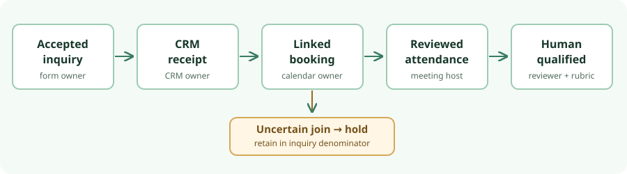

Inquiry → conversation · source check 29 Oct 2026
Are submissions becoming attended, qualified conversations?
Start with the form, CRM or inbox, and calendar you already operate. Reconcile accepted inquiries to booking status, host-confirmed attendance, and a separate human qualification decision. A form submit, scheduled slot, or analytics goal is not the final outcome. This report defines a measurement contract and checks a fictional ledger; it does not measure a live campaign.

One inquiry-based ledger
Use a canonical, validated inquiry_id as the cohort unit. Keep raw events and a derived as-of state. The fields and time windows below are proposed operator choices, not built-in features of any cited product.
| Record | Required evidence | Count rule |
|---|---|---|
| Accepted inquiry | Form owner: immutable ID, acceptance time, validation outcome, form version and campaign value, including unknown. | One canonical accepted event. Keep replay and rejected attempts separately; do not collapse different requests by email. |
| CRM receipt | CRM or inbox owner: destination ID, source key, read-back and failed-handoff repair state. | Form success does not prove the destination received it. |
| Booking chain | Calendar owner: booking UID, linked inquiry ID, start time, confirmed/canceled status, and reschedule predecessor/successor. | One uniquely linked inquiry, not one row per reschedule. A canceled-only chain is not currently confirmed. |
| Attendance | Host: meeting occurrence, affirmative attended, explicit no_show or unknown, review time and correction. | A past meeting time, calendar acceptance or missing no-show flag is not attendance. |
| Qualification | Named reviewer: rubric version, qualified, not_qualified or pending, with review time. | Count positive qualification only after affirmative attendance under this funnel definition. |
| Match hold | Reconciliation owner: candidate IDs, reason, reviewer, deadline and resolution. | Ambiguous matches stay in the inquiry denominator but outside confirmed outcome numerators. Orphan bookings add no inquiry. |
Carry a protected inquiry key into the authorized booking workflow, or document a reviewed one-to-one mapping of source IDs. Join booking updates by UID and explicit reschedule links. Reject zero or multiple candidate inquiries to a hold queue. Email, UTM, IP, analytics visitor ID and time proximity are not safe identity bridges by themselves. Whether the current tools can carry a protected key is unknown. Keep personal IDs out of public campaign URLs; apply access, retention and replay controls to any token.
Fix the denominator before reading a rate
One practical proposed policy is a UTC daily or weekly accepted-inquiry cohort, seven days to a uniquely linked booking, a meeting start within 14 days, an initial snapshot 14 days after cohort close and a matured snapshot after 28 days. These are not optimized service targets. Show late and out-of-window events separately. Preserve event time and recorded time; a later host review can revise the matured state without erasing the earlier snapshot.
| Outcome | Numerator / denominator | Report beside it |
|---|---|---|
| Linked booking | Accepted IDs with one confirmed, in-window booking chain / all canonical accepted IDs | Ever booked versus currently confirmed; cancellations, holds and orphans |
| Attended | Accepted IDs with affirmative host-reviewed attendance at an in-window linked meeting / all canonical accepted IDs | Unknown attendance and explicit no-shows separately |
| Qualified | Accepted IDs with affirmative attendance and a positive rubric review / all canonical accepted IDs | Pending reviews and rubric version |
Conditional rates such as qualified per attended are useful but must be labeled differently. Segment by preserved campaign value, with unknown separate. Sender clicks and site goals are upstream context, not inquiry IDs or causal lift. The earlier Mautic form-to-contact audit documents submission/contact ID surfaces but not an observed CRM receipt. The Umami and Plausible CE reports stop at site measurement. The one-question feedback decision concerns voluntary explanations, not this denominator.
What the fictional reconciliation actually returned
An offline, no-send script sorted invented events by recorded time and recomputed two snapshots. All assertions passed on 29 October. It did not connect to a form, CRM, calendar or scheduler. It checks bookkeeping only; its 7/14/28-day policy is described above but not implemented as a general windowing engine (all linked fixture dates fall inside the windows).
| Fixture result | Observed |
|---|---|
| Raw accepted-form rows → canonical accepted inquiries | 10 → 9; one duplicate replay |
| Distinct linked booking chains ever → currently confirmed | 6 → 5; one canceled-only chain, one reschedule counted once |
| Affirmatively attended → human-qualified | 4 → 3 |
| Final nine inquiry states | 3 qualified; 1 attended/not qualified; 1 canceled; 1 explicit no-show; 2 ambiguous holds; 1 unbooked |
| Other exceptions | 1 orphan booking; 1 unknown-campaign inquiry |
| Earlier → later snapshot | One pending attendance became attended and qualified; qualified count 2 → 3 |
The fixture's provisional ratios are 6/9 ever uniquely linked booked, 4/9 attended and 3/9 qualified; 2/9 remain held. These are not real conversion rates or performance estimates. The unknown-campaign qualified inquiry stays unattributed. The script did not test real identity matching, webhooks, event delivery, consent, security or production reliability.
Cal.com and Cal.diy are not interchangeable editions
Cal.com's April 2026 announcement says its production code became private and the public project is Cal.diy; the old calcom/cal.com GitHub URL redirects to Cal.diy. Cal.com's current self-hosting explanation routes commercial self-hosting through Enterprise/sales and recommends MIT Cal.diy for personal, non-production use. The Cal.diy README repeats the non-production warning and lists removed Teams, Organizations, Insights, Workflows and SSO/SAML features.
The visible release tag is a licence trap. v6.2.0 is dated 1 March 2026, before the split. Its tagged licence mixes AGPLv3 with commercial exceptions; do not call that tag MIT or the current Cal.diy edition. The current main-branch licence says MIT, but moving-main facts do not establish a post-split stable tag, exact distributable image or commercial suitability. A maintainer/governance issue raised the missing post-split tag/image. It is issue evidence, not a release guarantee.
Current Cal.com webhook help lists created, canceled and rescheduled booking triggers and example booking UIDs. A no-show update is not positive attendance; meeting timers do not prove it either. The current Cal.diy API guidance describes booking UIDs and routes but uses a hosted api.cal.com base URL, so it is not verified self-host configuration. These moving documents are not an exact-build test. Webhook retry, duplication, order, signature, read-back, secret scope and recovery remain untested. A booking UID can be sensitive: Cal.com's FAQ describes a hosted booking UID with bearer-like use. A receipt should be reconciled with authoritative booking status, not counted alone.
For a commercial campaign handoff, current Cal.com is not a self-serve open-source install recommendation. Cal.diy is only a possible private, non-production source evaluation if an operator accepts its stated scope and can pin and inspect a post-split artifact, licence, dependencies, features and maintenance owner. Otherwise retain the existing calendar or separately evaluate another candidate. No broad scheduler comparison was performed.
Next private gate
First use a fictional-only export from the existing form, CRM and calendar: duplicate submission, reschedule, cancellation, explicit no-show, pending/late review and ambiguous match. Read back each destination ID and two dated snapshots; replay should not create another CRM contact or booking. Confirm whether the current calendar exports UID/status history and carries a protected inquiry key. Obtain authorization and retention/access rules before any real records.
If an exact Cal.diy build is still needed, pin a post-split commit or stable tag and image digest; inspect component licences and edition; then test booking payloads and UID lineage, dropped/duplicate/out-of-order delivery, API read-back, backup/restore, secret scope and operator alerts in isolation. Attendance and qualification still require host and reviewer records. No fixture result here clears those gates.